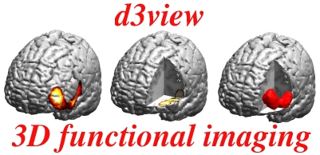

d3view Users Manual

Introduction
d3view is a matlab program, designed for simultaneous
3D rendering of anatomy (MR) and actvation (PET) datasets. The main use
of d3view is for front cover illustrations etc.
d3view is not suitable for direct data analysis, as
other programs more suitable for this use exist.
d3view uses a special file format (MR templates) for anatomical data.
MR templates are created from standard SPM Analyze images using the program d3template.
d3template is started either from the matlab prompt or from
inside d3view.
For activation datasets, d3view uses the standard SPM Analyze format.
A stepwise guidal through the features of d3template is available below.
Stepwise tutorial
- Starting d3view
- Loading files
- Understanding the imaging problem - anatomy
- Understanding the imaging problem - activation
- Rendering Parameters
- Rendering window
- Printing and saving
- Reading and saving parameters